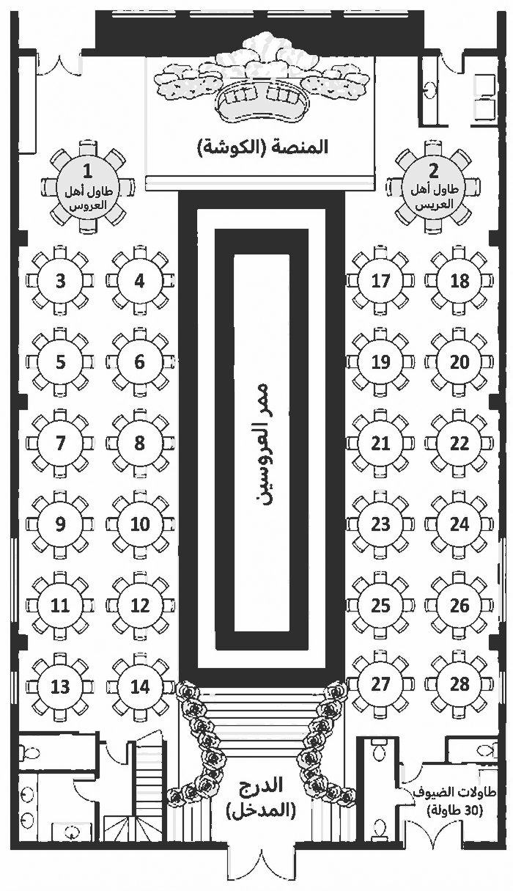

حساب الإدارة
جاري الاتصال
0/0دخلوا / إجمالي المقاعد
0المقاعد المؤكدة
0إجمالي الردود
0الاعتذارات
0جهة عمر
0جهة علا
0طلبات خاصة
0ذكريات Phonebooth
عرض مخطط القاعة المرجعي
مرجع بصري تقريبي فقط؛ تعيين الطاولة الفعلي يتم من بطاقات الضيوف أدناه.

الرسائل والطلبات
صندوق ذكريات عمر وعلا
الرسائل والصور والتسجيلات الصوتية المرسلة من الضيوف.
جاري تحميل الذكريات…
Check-in
ابحث بالاسم/الهاتف/RSVP ID، أو افتح الكاميرا لمسح QR.